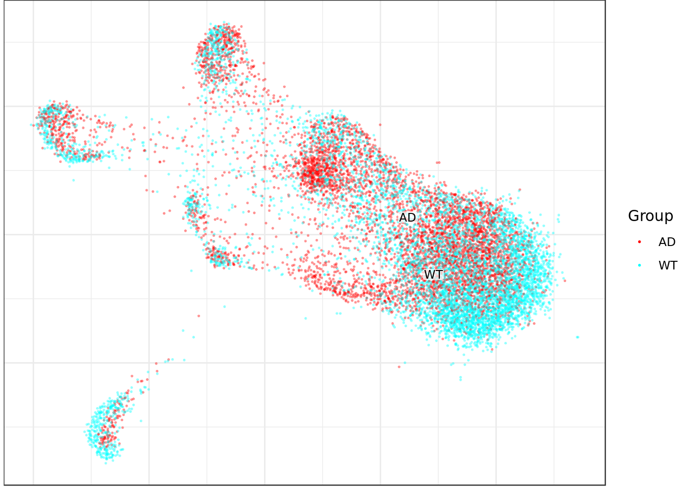
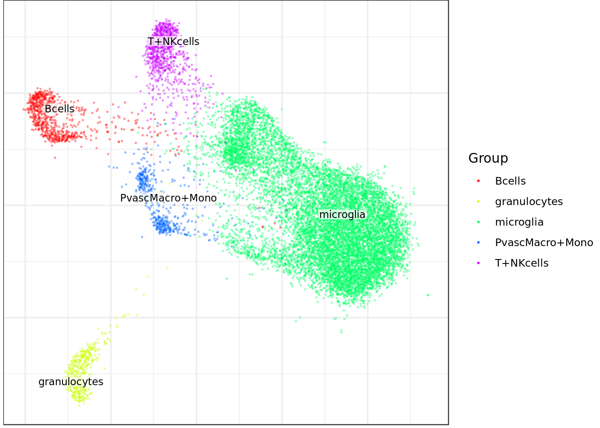
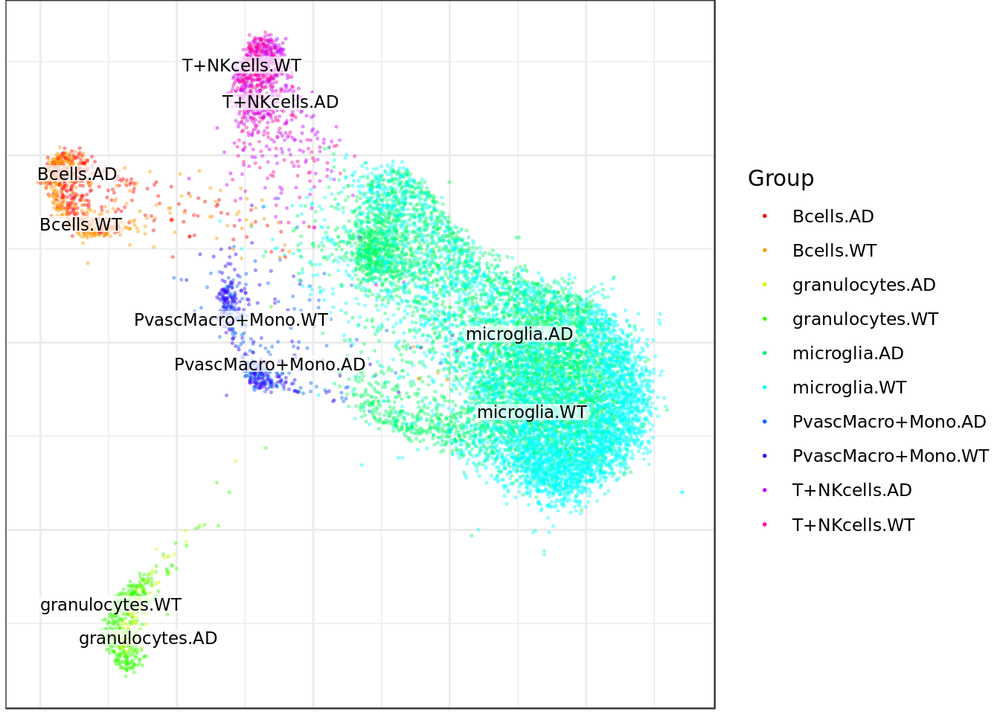
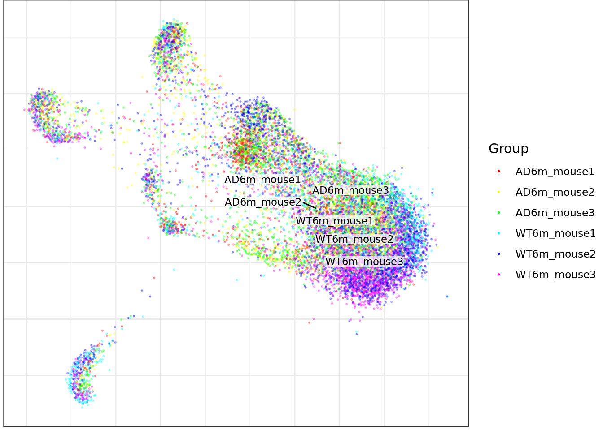
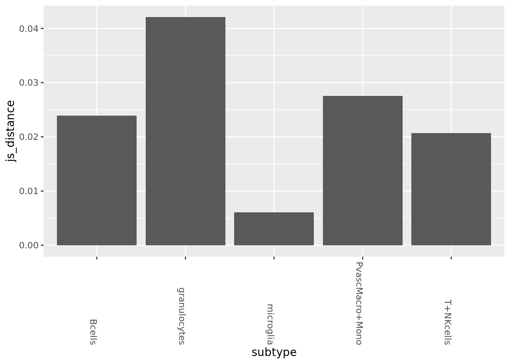
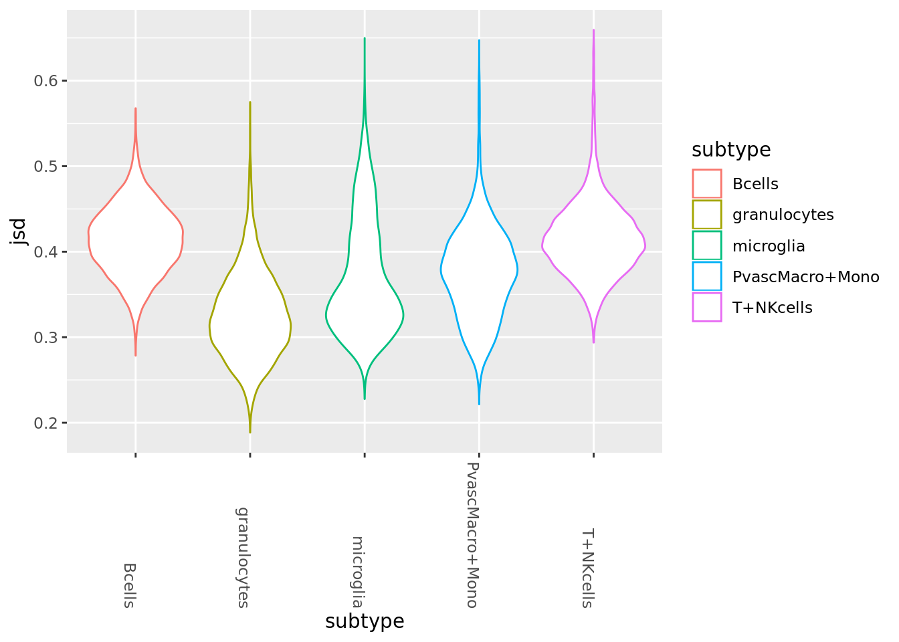
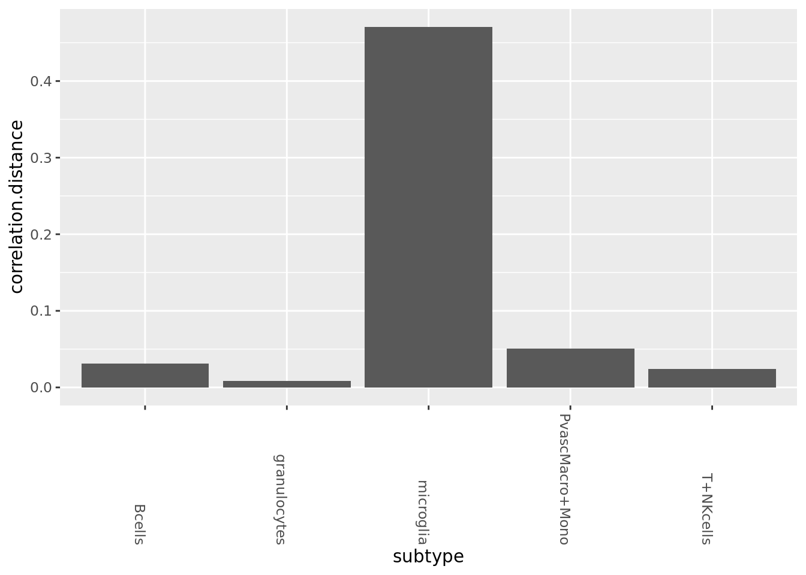
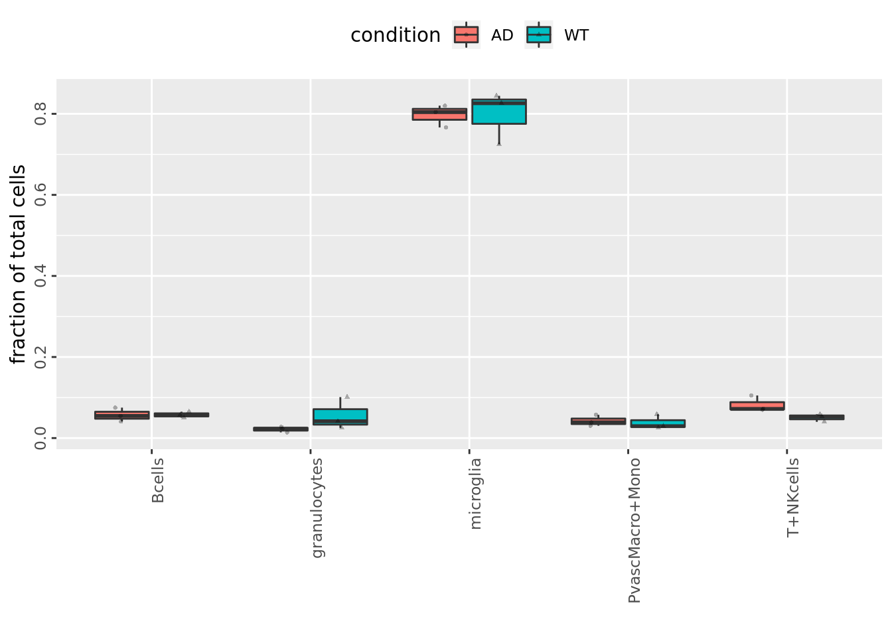
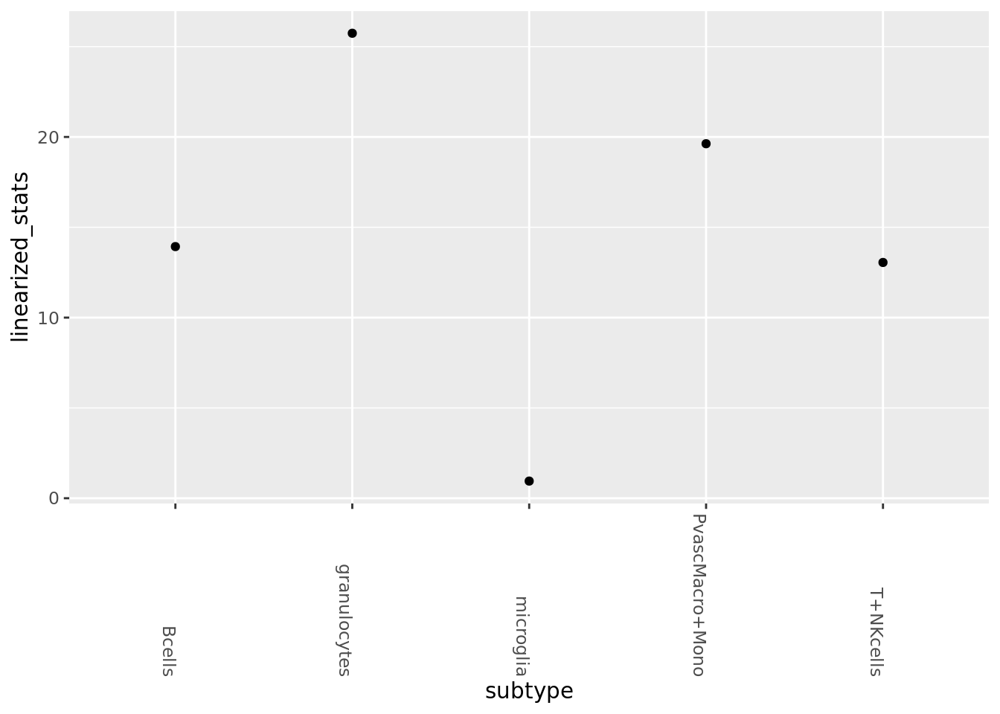

Last updated: 2020-07-03
Checks: 6 0
Knit directory: SecretUtils/
This reproducible R Markdown analysis was created with workflowr (version 1.3.0). The Checks tab describes the reproducibility checks that were applied when the results were created. The Past versions tab lists the development history.
Great! Since the R Markdown file has been committed to the Git repository, you know the exact version of the code that produced these results.
Great job! The global environment was empty. Objects defined in the global environment can affect the analysis in your R Markdown file in unknown ways. For reproduciblity it’s best to always run the code in an empty environment.
The command set.seed(20190415) was run prior to running the code in the R Markdown file. Setting a seed ensures that any results that rely on randomness, e.g. subsampling or permutations, are reproducible.
Great job! Recording the operating system, R version, and package versions is critical for reproducibility.
Nice! There were no cached chunks for this analysis, so you can be confident that you successfully produced the results during this run.
Great! You are using Git for version control. Tracking code development and connecting the code version to the results is critical for reproducibility. The version displayed above was the version of the Git repository at the time these results were generated.
Note that you need to be careful to ensure that all relevant files for the analysis have been committed to Git prior to generating the results (you can use wflow_publish or wflow_git_commit). workflowr only checks the R Markdown file, but you know if there are other scripts or data files that it depends on. Below is the status of the Git repository when the results were generated:
Ignored files:
Ignored: .Rhistory
Ignored: .Rproj.user/
Untracked files:
Untracked: .Rbuildignore
Untracked: R/asdf_bk
Untracked: R/hello.R
Untracked: R_bk/
Untracked: analysis/eps_joint_all.bmp
Untracked: analysis/grid_of_grids.pdf
Untracked: analysis/make_scanpy_viktor.R
Untracked: analysis/morphine.Rmd
Untracked: analysis/mouse_alzheimer_annotating.Rmd
Untracked: analysis/mouse_alzheimer_preproc.Rmd
Untracked: analysis/paga.Rmd
Untracked: analysis/paga3.Rmd
Untracked: analysis/pca_dependency.Rmd
Untracked: analysis/simulate_data.Rmd
Untracked: analysis/simulate_data2.Rmd
Untracked: analysis/simulate_data3.Rmd
Untracked: analysis/simulations_plots3_bk.Rmd
Untracked: analysis/simulations_plots4.Rmd
Untracked: analysis/simulations_plots5_bk.Rmd
Untracked: analysis/simulations_plots6.Rmd
Untracked: analysis/subtype_distances.Rmd
Untracked: analysis/subtype_distances2.Rmd
Untracked: analysis/subtype_distances4.Rmd
Untracked: analysis/subtype_distances_redux.Rmd
Untracked: analysis/subtype_distances_revenge.Rmd
Untracked: analysis/test_output.Rmd
Untracked: analysis/transmute_peters_code.Rmd
Untracked: docs/figure/paga.Rmd/
Untracked: man/
Unstaged changes:
Modified: R/asdf.R
Modified: analysis/correlation_stuff.Rmd
Modified: analysis/jensen_shannon_stuff.Rmd
Modified: analysis/misc_metrics.Rmd
Modified: analysis/paga2.Rmd
Modified: analysis/paga_analyses.Rmd
Modified: analysis/pancreas_indrop.Rmd
Modified: analysis/sanity_check.Rmd
Modified: analysis/simulations_plots.Rmd
Modified: analysis/simulations_plots3.Rmd
Modified: analysis/simulations_plots5.Rmd
Modified: analysis/simulations_plots_intro.Rmd
Modified: analysis/subtype_distances3.Rmd
Modified: analysis/transmute_code_eps.Rmd
Modified: analysis/transmute_code_eps_2.Rmd
Modified: analysis/visualizations.Rmd
Note that any generated files, e.g. HTML, png, CSS, etc., are not included in this status report because it is ok for generated content to have uncommitted changes.
These are the previous versions of the R Markdown and HTML files. If you’ve configured a remote Git repository (see ?wflow_git_remote), click on the hyperlinks in the table below to view them.
| File | Version | Author | Date | Message |
|---|---|---|---|---|
| Rmd | b7acbc7 | githubz0r | 2020-07-03 | update the script a bit |
| html | 0c4c367 | githubz0r | 2019-06-06 | Build site. |
| Rmd | 056d849 | githubz0r | 2019-06-06 | some new plots |
Load conos, pagoda2 and SecretUtils etc.
library(conos)
library(tidyverse)
devtools::load_all('/home/larsc/SecretUtils')
require(pagoda2)
library(pheatmap)
library(irlba)
library(igraph)
mouse_annot <- read.csv(file.path('/home/larsc/data/mouse_alzheimer/mouse_alzheimers_annotation_filtered_subtypes.csv'))
mouse_annot$subtype_condition <- paste0(mouse_annot$celltype, '.', mouse_annot$condition)load conos object
mouse_con <- readRDS('/home/larsc/data/mouse_alzheimer/mouse_alzheimers_conos_procced_graphed.rds')Rbind panels from conos objects
rbound_panel <- RbindPanel(mouse_con)
# sorting it just in case
rbound_panel <- rbound_panel[order(rbound_panel %>% rownames),]Make groups for colorful tsne plots of the dataset
nr_annot <- setNames(mouse_annot$mouse_nr, mouse_annot$Well_ID)
batch_annot <- setNames(mouse_annot$Amp_batch_ID, mouse_annot$Well_ID)
condition_annot <- setNames(mouse_annot$condition, mouse_annot$Well_ID)
celltype_annot <- setNames(mouse_annot$celltype, mouse_annot$Well_ID)
sub_cond_annot <- setNames(mouse_annot$subtype_condition, mouse_annot$Well_ID)table(nr_annot)nr_annot
AD6m_mouse1 AD6m_mouse2 AD6m_mouse3 WT6m_mouse1 WT6m_mouse2 WT6m_mouse3
1517 2264 2264 1514 2651 2273 table(celltype_annot)celltype_annot
Bcells granulocytes microglia PvascMacro+Mono
723 446 10018 469
T+NKcells
827 Plot graph with different annotations
mouse_con$plotGraph(groups=condition_annot, font.size=3, size=0.3, alpha=0.3, show.legend=T)
| Version | Author | Date |
|---|---|---|
| 0c4c367 | githubz0r | 2019-06-06 |
mouse_con$plotGraph(groups=celltype_annot, font.size=3, size=0.3, alpha=0.3, show.legend=T)
| Version | Author | Date |
|---|---|---|
| 0c4c367 | githubz0r | 2019-06-06 |
mouse_con$plotGraph(groups=sub_cond_annot, font.size=3, size=0.3, alpha=0.3, show.legend=T)
| Version | Author | Date |
|---|---|---|
| 0c4c367 | githubz0r | 2019-06-06 |
mouse_con$plotGraph(groups=nr_annot, font.size=3, size=0.3, alpha=0.3, show.legend=T)
| Version | Author | Date |
|---|---|---|
| 0c4c367 | githubz0r | 2019-06-06 |
Initiate some variables
od_genes = conos:::getOdGenesUniformly(mouse_con$samples, 3000)
state_split <- split(mouse_annot, mouse_annot$condition, drop=TRUE)
subtype_split <- state_split %>% lapply(function(x){split(x, x$celltype, drop=TRUE)})Jensen Shannon between AD and WT, overall (microglia has by far the most cells so this will heavily skew the result due to dropout)
sub_mats_probs <- SecretUtils::GetSubMats(rbound_panel, mouse_annot$Well_ID, mouse_annot$celltype, mouse_annot$condition,
normalize=T, pseudo.prob=10^-8)
all_dists <- Map(JensenShannon, sub_mats_probs$AD, sub_mats_probs$WT) %>% as_tibble
all_dists_gathered <- gather(all_dists, key=subtype, value=js_distance)
ggplot(all_dists_gathered, aes(y=js_distance, x=subtype)) +geom_bar(stat='identity') +
theme(axis.text.x = element_text(angle = -90, hjust = 1))
| Version | Author | Date |
|---|---|---|
| 0c4c367 | githubz0r | 2019-06-06 |
Violins plots of between condition distances(slightly older function, hence some not ideal practices regarding input variables, but gets the job done).
wtcellprobs <- IndividualCellProbs(state_split$WT, rbound_panel, 1, 7, 100, od_genes, 10^(-8))
adcellprobs <- IndividualCellProbs(state_split$AD, rbound_panel, 1, 7, 100, od_genes, 10^(-8))
all_singlecell_dists <- Map(CalculateAllJSD, wtcellprobs, adcellprobs)
all_sc_dists <- all_singlecell_dists %>% as_tibble
all_scd_gathered <- gather(all_sc_dists, key=subtype, value=jsd)
ggplot(all_scd_gathered, aes(y=jsd, x=subtype)) + geom_violin(aes(col=subtype))+
theme(axis.text.x = element_text(angle = -90, hjust = 1))
PCA for correlation (correlation is very biased in gene expression space)
pca_cm <- prcomp_irlba(rbound_panel[, od_genes],n=100)
pca_cmat <- pca_cm$x
rownames(pca_cmat) <- rownames(rbound_panel)
pca_genes <- colnames(pca_cmat)sub_mats_pca <- SecretUtils::GetSubMats(pca_cmat, mouse_annot$Well_ID, mouse_annot$celltype, mouse_annot$condition)
all_dists <- Map(function(x,y){1-cor(x,y)}, sub_mats_pca$AD, sub_mats_pca$WT) %>% as_tibble
all_dists_gathered <- gather(all_dists, key=subtype, value=correlation.distance)
ggplot(all_dists_gathered, aes(y=correlation.distance, x=subtype)) +geom_bar(stat='identity') +
theme(axis.text.x = element_text(angle = -90, hjust = 1))
| Version | Author | Date |
|---|---|---|
| 0c4c367 | githubz0r | 2019-06-06 |
Plot showing which fractions belong to which celltype for the corresponding conditions.
FractionalPlot(mouse_annot$mouse_nr, mouse_annot$celltype, mouse_annot$condition)
PAGA using unaligned graph (KNN graph where edges are correlation distance in PCA space). Small value = less connected, i.e. a similarity metric, not distance. Note that in general we do not trust the PAGA metric as unbiased, see the simulation plots.
raw_mouse <- RbindRaw(mouse_con)
mouse_unaligned_adj <- GenerateUnalignedAdj(raw_mouse, cellid.vector=mouse_annot$Well_ID)[mouse_annot$Well_ID, mouse_annot$Well_ID]12483 cells, 34016 genes; normalizing ... using plain model winsorizing ... log scale ... done.
calculating variance fit ... using gam 134 overdispersed genes ... 134 persisting ... done.
running PCA using 3000 OD genes .... donesubtype_order <- (paste0(mouse_annot$celltype) %>% unique)[order(paste0(mouse_annot$celltype) %>% unique)]
membership_vec <- as.numeric(factor(mouse_annot$subtype_condition))connectivities <- GetPagaMatrix(mouse_unaligned_adj, membership_vec, scale=F)
linearized_stats <- seq(1, dim(connectivities)[1], 2) %>% sapply(function(i){connectivities[i,i+1]})
paga_df <- bind_cols(value=linearized_stats, subtype=subtype_order)
ggplot(paga_df, aes(y=linearized_stats, x=subtype)) +geom_point()+
theme(axis.text.x = element_text(angle = -90, hjust = 1))
sessionInfo()R version 3.5.3 (2019-03-11)
Platform: x86_64-pc-linux-gnu (64-bit)
Running under: Ubuntu 18.04.2 LTS
Matrix products: default
BLAS: /usr/lib/x86_64-linux-gnu/atlas/libblas.so.3.10.3
LAPACK: /usr/lib/x86_64-linux-gnu/atlas/liblapack.so.3.10.3
locale:
[1] LC_CTYPE=en_US.UTF-8 LC_NUMERIC=C
[3] LC_TIME=en_US.UTF-8 LC_COLLATE=en_US.UTF-8
[5] LC_MONETARY=en_US.UTF-8 LC_MESSAGES=en_US.UTF-8
[7] LC_PAPER=en_US.UTF-8 LC_NAME=C
[9] LC_ADDRESS=C LC_TELEPHONE=C
[11] LC_MEASUREMENT=en_US.UTF-8 LC_IDENTIFICATION=C
attached base packages:
[1] stats graphics grDevices utils datasets methods base
other attached packages:
[1] irlba_2.3.3 pheatmap_1.0.12 pagoda2_0.1.0
[4] SecretUtils_0.1.0 reshape2_1.4.3 magrittr_1.5
[7] forcats_0.4.0 stringr_1.4.0 dplyr_0.8.3
[10] purrr_0.3.2 readr_1.3.1 tidyr_0.8.3
[13] tibble_2.1.3 ggplot2_3.2.0 tidyverse_1.2.1
[16] conos_1.0.0 igraph_1.2.4.1 Matrix_1.2-17
loaded via a namespace (and not attached):
[1] nlme_3.1-139 matrixStats_0.54.0 fs_1.3.1
[4] usethis_1.5.0 lubridate_1.7.4 devtools_2.0.2
[7] RColorBrewer_1.1-2 httr_1.4.0 rprojroot_1.3-2
[10] tools_3.5.3 backports_1.1.4 R6_2.4.0
[13] mgcv_1.8-28 lazyeval_0.2.2 colorspace_1.4-1
[16] withr_2.1.2 tidyselect_0.2.5 gridExtra_2.3
[19] prettyunits_1.0.2 processx_3.3.1 compiler_3.5.3
[22] git2r_0.25.2 cli_1.1.0 rvest_0.3.4
[25] xml2_1.2.0 desc_1.2.0 labeling_0.3
[28] triebeard_0.3.0 scales_1.0.0 callr_3.2.0
[31] pbapply_1.4-0 digest_0.6.20 rmarkdown_1.12
[34] base64enc_0.1-3 pkgconfig_2.0.2 htmltools_0.3.6
[37] sessioninfo_1.1.1 rlang_0.4.0 readxl_1.3.1
[40] rstudioapi_0.10 shiny_1.3.2 generics_0.0.2
[43] jsonlite_1.6 dendextend_1.12.0 Rcpp_1.0.1
[46] munsell_0.5.0 abind_1.4-5 viridis_0.5.1
[49] stringi_1.4.3 whisker_0.3-2 yaml_2.2.0
[52] MASS_7.3-51.3 pkgbuild_1.0.3 Rtsne_0.15
[55] plyr_1.8.4 grid_3.5.3 ggrepel_0.8.1
[58] parallel_3.5.3 promises_1.0.1 crayon_1.3.4
[61] lattice_0.20-38 splines_3.5.3 haven_2.1.0
[64] cowplot_0.9.4 hms_0.4.2 knitr_1.22
[67] ps_1.3.0 pillar_1.4.2 rjson_0.2.20
[70] pkgload_1.0.2 glue_1.3.1 evaluate_0.13
[73] data.table_1.12.2 remotes_2.0.4 modelr_0.1.4
[76] urltools_1.7.3 httpuv_1.5.1 testthat_2.1.1
[79] cellranger_1.1.0 gtable_0.3.0 assertthat_0.2.1
[82] xfun_0.6 mime_0.6 xtable_1.8-4
[85] broom_0.5.2 later_0.8.0 viridisLite_0.3.0
[88] memoise_1.1.0 Rook_1.1-1 workflowr_1.3.0
[91] brew_1.0-6